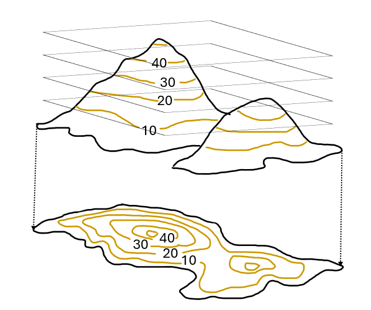
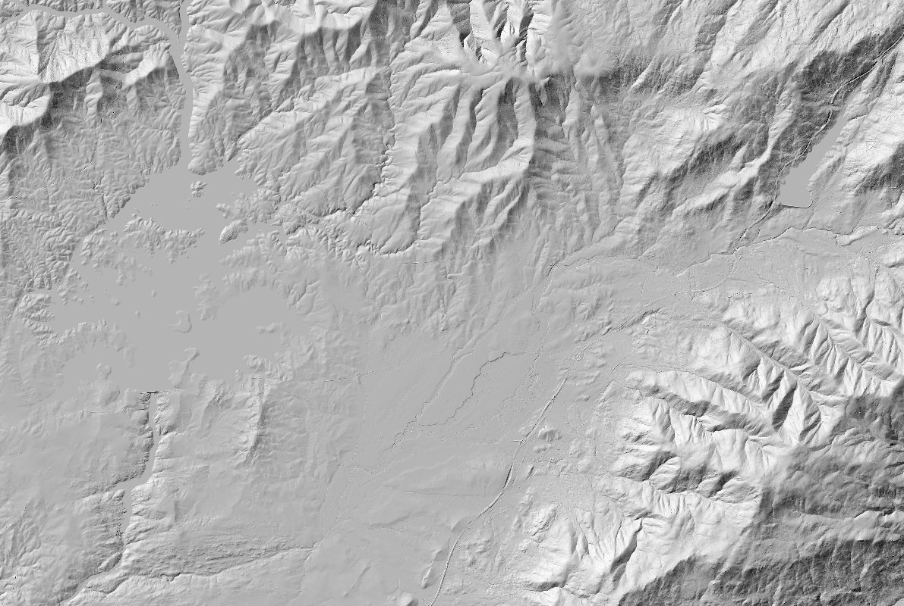
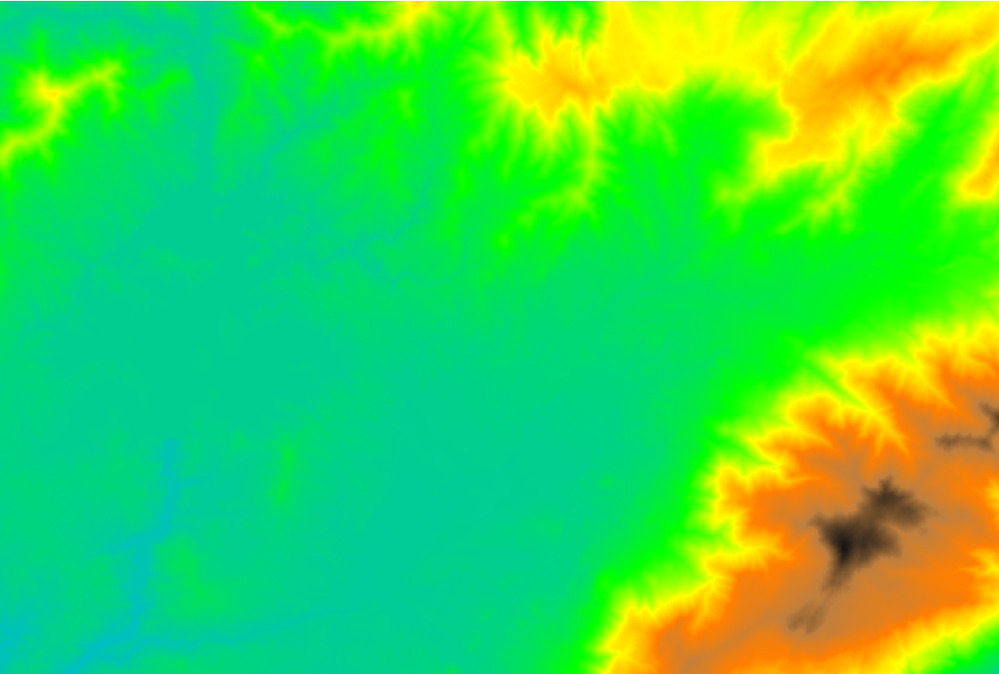
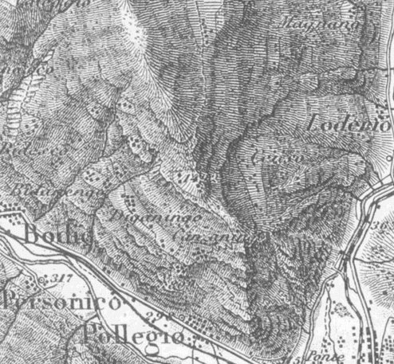
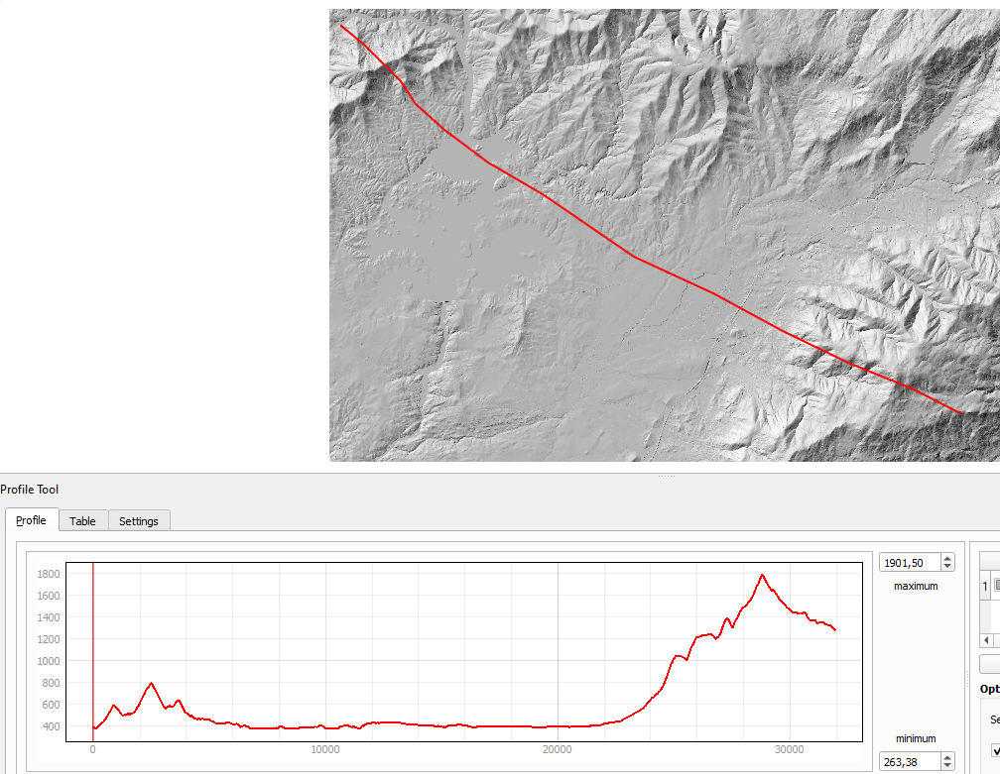

Curvas de Nivel
Las curvas de nivel son líneas que conectan puntos de igual elevación. Este método es muy útil, porque permite representar de forma clara la elevación y la pendiente de un terreno. Las curvas que están más cerca entre sí indican pendientes pronunciadas, mientras que las más separadas representan áreas planas o de menor inclinación.

Sombreados
El sombreado simula cómo se vería el relieve bajo una fuente de luz teórica (generalmente desde una dirección en diagonal). Este método es menos exacto que las curvas de nivel, pero permite una comprensión visual rápida de las formas y pendientes del terreno.

Tintas Hipsométricas
La hipsometría por colores usa una escala de colores para representar diferentes rangos de elevación. Por ejemplo, los colores verdes suelen indicar áreas bajas, los amarillos y naranjas áreas medias, y los marrones y blancos áreas altas o montañosas.

Hachuras
Las hachuras son líneas pequeñas que se dibujan en el mapa para indicar la inclinación y la dirección de la pendiente. Este método fue uno de los primeros en desarrollarse, antes de la adopción generalizada de las curvas de nivel.
Fuente: Kennelly, P. J. (2015)
Perfiles Topográficos
Los perfiles topográficos son representaciones lineales del relieve que muestran el cambio de altitud a lo largo de una línea específica en el terreno, como una sección transversal. Este método se usa para analizar el relieve a lo largo de trayectorias como rutas de carreteras o senderos.

Muchas veces, se combinan varios métodos en un mismo mapa topográfico para enriquecer la información y mejorar la comprensión visual del terreno. Por ejemplo, un mapa puede mostrar curvas de nivel junto con sombreados y colores hipsométricos, facilitando una comprensión detallada de las pendientes, elevaciones y formas del terreno.